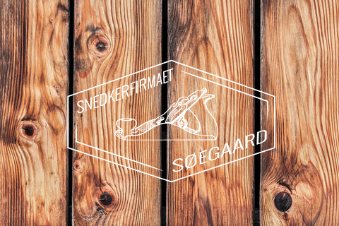
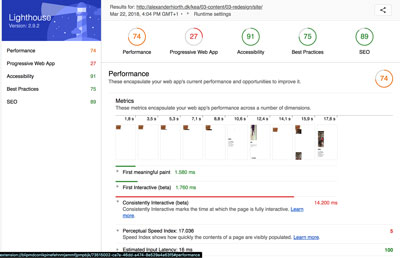
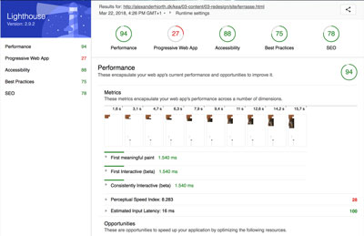

Stefani Arsovic
Alexander Hjorth
Philip Stampe
Finn Petersen
Link til gruppekontraktPassword til Website - Brugernavn: kea * Kode: kea
Hovedsageligt folk der gerne vil have en terrasse, hegn eller andre ting som kræver godt solidt håndværk. Aldersgruppe er på 30+ og så deropefter.
Brug Snedkerfirmaet Søegaard
En præsetation af virksomheden og dens ejer. Første akt af videoen skal bestå af en introduktion til virksomhedens ejer og grundlægger, Andreas Pedersen Soegaard. Dernæst vil vi i anden akt, introducere selve virksomheden og dens produkt. Video af Andreas der fortæller omkring projekter, samt b-roll af forrige projekt, maskiner ovs. Sidste og tredje akt skal består af en afrunding, måske et catch der vil få seeren til at ville søge yderligere information omkring hvad firmaet kan gøre for dem. Filmen optages på virksomhedens værksted, og hvis muligt også ude på et projekt. Farver: Indendørs. Primært lys for loftlamper.
En snedker.
Sandsynligvis købe/kontakte en snedker (man kan ikke se udfra forside).
Værktøjet.
Enkel.


Vores ide med redesignet er overordnet set at lave en løsning som er mere tilgængelig for brugerne i forhold til at finde information. Vi har valgt at beholde det som en one pager, da vi syntes det fungere godt i forhold til at hjemmesiden er til for at vise hans arbejde, og give kontaktoplysninger. Derfor synes vi det er bedst at beholde det enkelt og informativt.
Der skal tilføjes flere menupunkter som links, så man som bruger kan trykke på det man gerne vil se, og det så derefter, selv hopper ned på den side, man skal have information om. Menupunkterne skal følge siden, så når man kommer ned i en ny sektion at menuen stadig er der, så man bare kan klikke videre til det næste uden at skulle scrolle op i starten for at trykke på et nyt menupunkt eller scrolle ned til det man leder efter. Vi ændre også billedet i APS afsnittet, så vi fjerner det nuværende billede da det ikke passer til teksten i forhold til at der er et lidt ‘useriøst’ billede til en seriøs tekst, og så indsætter vi virksomhedsvideoen ind, ved siden af teksten, ved brug af flexbox, med et starts billede af ham.
Teksten fra billederne under ‘kvalitet, kunden og håndværk’ sektionen, fjerner vi da vi syntes det er forstyrrende for øjet at det står som det gør, derfor vil vi lave det så tekst og billede er under hinanden, for at få et mere roligt layout.
Derudover syntes vi at terrasse sektion er ligegyldig da der er en ekstern side med kun terrasse information, derfor vil vi fjerne den derfra, så terrasse informationer kun er som en ekstra side, dvs man trykker på det menupunkt som hedder ‘’terrasser’’ når man vil ind på det, og så åbner der sig en ‘ny’ side.
Så vil vi udskifte billeder under sektionen ‘’mit arbejde’’ da der er 2 billeder som er irrelevante i forhold til at der skal være billeder af hans arbejde, vi vil derfor skifte det ud med billeder som passer til. Under kontaktoplysningerne i bunden vil vi gøre det lidt lækre, ved kun at have informationer i bunden og ikke to steder lige efter hinanden som det er lige nu, da vi syntes det er irrelevant at have det to steder under hinanden, nu hvor vi også laver ny menupunkter, så ved man hvor man skal finde kontakt informationerne henne.
Vi vil også sætte Instagram og Facebook derned i stedet for i menupunktet, da det ofte er her det befinder sig. Der skal også rettes stavefejl da vi har fundet et par stykker af dem også, både på main sitet og på det eksterne med terrassen.
I forhold til terrasse sektionen der er på den eksterne side, er der en video med 10 gode råd. Vi har planer om at udskifte videoen med 10 linjer af de gode råd, da videoen er i dårlig opløsning og at man skal trykke på et link for at komme ind til de resten 9 videoer på en hjemmeside som ikke hører til hjemmesiden. Derfor tænker vi at have et link så man kan trykke på det, og blive sendt til den hjemmeside med videoerne, for at holde det rent og informativt med høj kvalitet.
Vi har også prøvet at udskifte det første billede (splash billede) med et andet, da vi syntes der sker for meget, og det fjerner en smule fokus fra logoet, så vi vil tage et mere enkelt billede af træ ind, så vi får mere fokus på logoet, men samtidig får træet også understøttet ‘teamet’ om en snedker da en snedker arbejder med træ i lange baner. Eksemplet ses nedeunder. Vi valgte dog at gå med det orginale da vi syntes det fungerede bedst
Vi har valgt CSS tagget "position: sticky". Tagget får et element til at sticky/sidde fast et specifikt sted. Vi har valgt at bruge tagget, til at få vores nav (menu), til at følge med ned, når man scroller på siden. I HTML har vi givet vores nav en div kaldet div class="sticky"
I CSS har vi skrevet koden således: div.sticky ( position: -webkit-sticky; position: sticky; top: 0; ) position: -webkit-sticky;
bruges for at det også virker i browseren Safari. position: sticky; bruges for at få elementet til at sidde fast. top: 0; bruges for at elementet sidde fast i toppen.
Her er 1 “stilfuld”, og “5” “sjusket”. 13 respondenter, svarende til 59,1% har svaret “2”. Altså mindre stilfuld. Ingen har svaret “sjusket”.
Her er “1” “Overhovedet ikke professionel” mens “5” er “meget professionel” Her svarer 50%, svarende til 11 respondenter “4” - altså professionel. Ingen har svaret “Overhovedet ikke professionel”
Her er “1” “meget overskuelig” mens 5 er “lidt overskuelig” 11 respondenter, svarende til 50% af de adspurgte har svaret “2” - altså overskuelig. Ingen har svaret “lidt overskuelig”.
Her er “1” “i høj grad” mens 5 er “lav grad”. 59,1% - svarende til 13 respondenter svarer her “i høj grad”. Ingen svarede “lav grad”.
her “1” “lav grad” mens “5” er i høj grad”. 7 har svaret “4” altså i større grad. det svarer til 31,8% af de adspurgte. 3 har svaret “i lav grad” svarende til 13,6% af de adspurgte.
Her er “1” “meget” mens 5 er “slet ikke”. Her svarer 9 personer “3” svarende til 40,9% af de adspurgte, altså nogenlunde. 3 svarede “slet ikke” 13,6%.
Her er “1” “meget” mens “5” er “slet ikke”
2 respondenter - 9,1% - svarer at de slet ikke er motiveret.
I alt svarerde 22 personer.
Index har en dårlig performance da der er mange billeder der og nogle fylder meget. Progressive Web App har en scor på 27 da vi ikke har lave siden i forhold til tablet og smartphones.
Terrasse har god performance da der ikke er så mange billeder. Progressive Web App har en score på 27 da vi ikke har lave siden i forhold til tablet og smartphones.
Vi valgte et delvist redesign af snedkerfirmaet Søgaards hjemmeside. Vi startede med en analyse af sitet. Vi brugte 5-sekunder og Bert-test. Herefter blev der tegnet wireframe- og layoutdiagrammer som blev brugt som guideline i kodearbejdet. Vi afveg undervejs fra diagrammerne, da valget faldt på et “slideshow” til at vise billederne på Terrasse-siden. Samtidig blev menuen sat op så den blev liggende når vi “kørte” ned over siden.
Af udfordringer må Git nævnes. Det er helt sikkert smart når vi lærer at bruge det, men efter at have brugt lang tid på udrede mærkelige ting i vores kode, gik vi over til at sende kode via Facebook. Det var ikke optimalt, men en hurtig måde at løse et problem på. Vi endte ud med at samle koden på én maskine.
Alt i alt en stressende uge, med meget arbejde der skulle nås på lidt tid, samtidig med alverdens udfordringer.